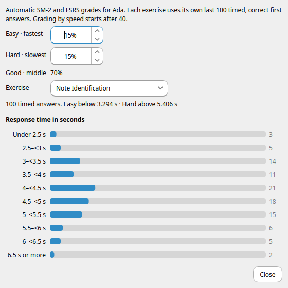
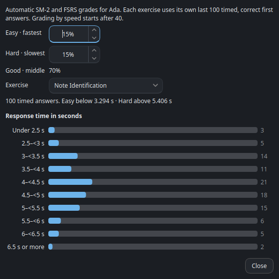
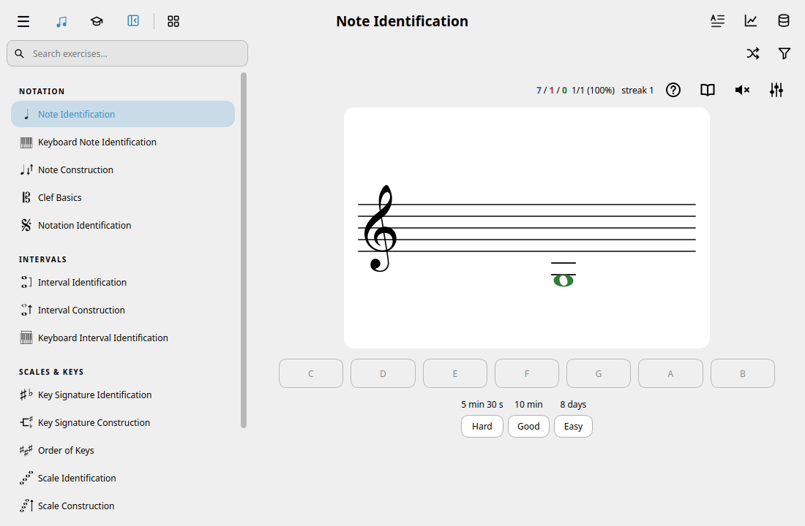
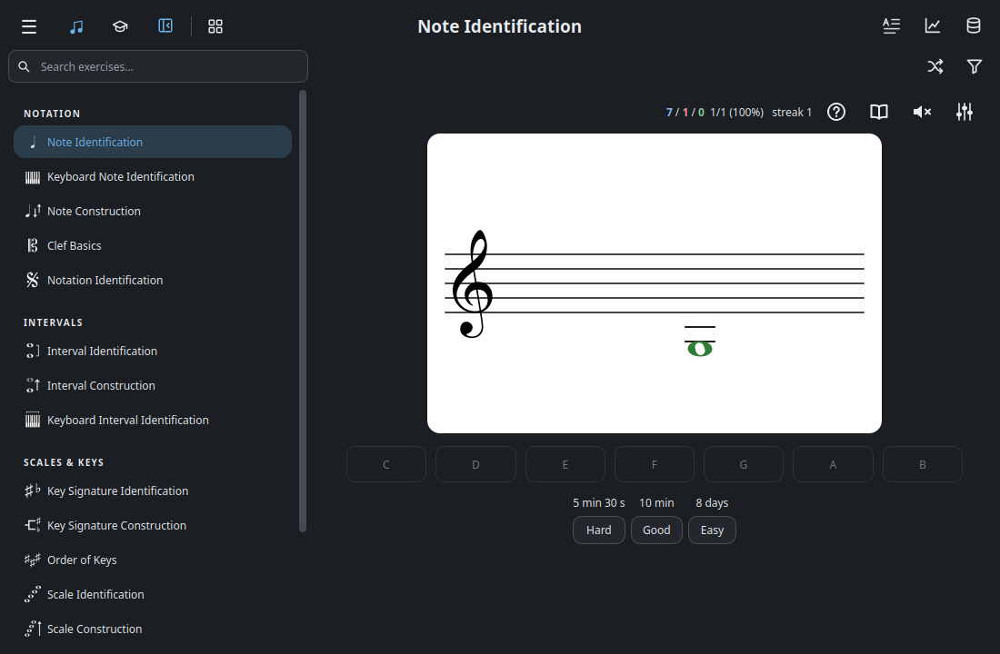
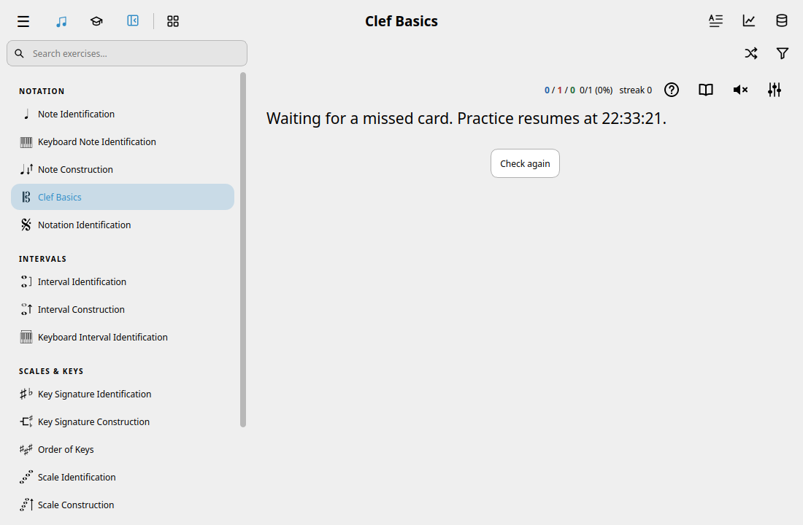
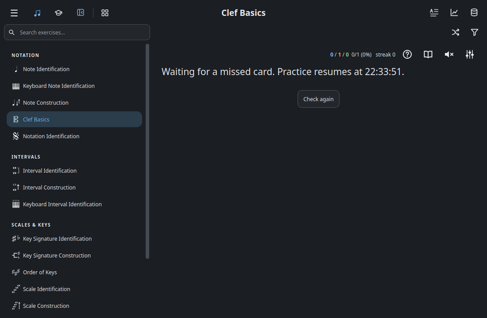

Spaced Repetition
Choose a scheduling algorithm for your profile under Settings → Practice → Question scheduling. ASRS and ARTS let you practice for as long as you like. SM-2 and FSRS give each card a review date. With either of those, the exercise pauses when you are caught up. Another review can come due later the same day.
Consider a single Note Identification question, F♯ in treble clef. A scheduler can choose whether to show F♯ on the next turn, or it can set a due date for its next review. Even schedulers that make the same kind of decision use different evidence.
Scheduler |
What changes after an answer? |
How does F♯ return? |
|---|---|---|
Each attempt changes its strain. |
A weighted draw on each turn. Its weight recovers as seconds pass. |
|
The first answer sets how fast its priority grows. |
It returns when its priority ranks highest. Each intervening question raises that priority. |
|
The first answer updates its run of successes and ease factor. |
Its review interval follows a sequence of day counts, with a short retry after a miss. |
|
The first answer updates its estimated memory stability and difficulty. |
After the learning steps, it gets a review date near the model’s 90% recall point. |
Response-time grading
In automatic SM-2 and FSRS practice, Alto compares a correct first answer with your previous answers to the same exercise. The fastest 15% earn Easy, the slowest 15% earn Hard, and the middle earns Good. A miss always earns Again. Each exercise has its own distribution, so time spent placing notes on a staff has no effect on the cutoff for identifying a keyboard note.
Open Settings → Practice → Response-time grading… to see the distribution for an exercise and its cutoffs in seconds. Change the Easy and Hard percentages there. Good gets the remaining share. The percentages apply to this profile across exercises and both calendar schedulers. A zero disables that tail. Answers exactly at a cutoff earn Good.
Alto starts with Good until there are 40 eligible answers. It recalculates the cutoffs from the most recent 100 timed, correct first answers before grading each new response. Previous practice in any mode counts. Retries and interrupted timings are excluded. A correct interrupted answer earns Good. After calibration, the intervals appear to the right of the music, with Easy at the top, Good in the middle, and Hard at the bottom. Keyboard exercises show Hard, Good, and Easy from left to right beneath the keys. After a correct answer, Alto shows the assigned grade and interval.
Keyboard Note Identification and Keyboard Interval Identification each need 40 timed, correct first answers of their own. If you see three intervals under one keyboard and a single interval under the other, the second exercise is still collecting timings. The scheduler uses the same intervals as the corresponding grade buttons.


Self-grading a new card
In Settings → Practice, select Grade correct answers with Hard, Good, or Easy. After a correct answer, Hard and Good keep a new card in its short learning steps. Easy skips those steps. SM-2 starts its first Easy review at 4 days. With Alto’s default FSRS settings, the starting estimate is about 8.3 days.


First correct answer |
SM-2 |
FSRS |
|---|---|---|
Hard |
5 min 30 s |
5 min 30 s |
Good |
10 min |
10 min |
Easy |
3–5 days |
6–10 days |
Alto spreads reviews across nearby days so that cards learned together can come due on different days. This adjustment is called fuzzing. For example, two new FSRS cards can show 7 days and 9 days for Easy even though both start with the same estimate. If you reopen the same card before grading it, its preview stays the same.
ASRS
The Alto Spaced Repetition System (ASRS) is the default scheduler. For each turn, it generates a few questions and adds some you have answered before under the same exercise settings. It draws from that pool at random, giving more weight to questions you find difficult. A question you just answered gets less weight for a while. The better you know it, the longer that effect lasts.
Strain
Each question has a score called strain, which says how much practice it needs. It starts at 1.5, stays between 0 and 6, and changes with each answer.
Answer |
Change in strain |
|---|---|
Wrong |
Add 1.5 for each miss. |
Right on the first try |
Subtract 0.5, then adjust for speed. |
Right after a miss |
Subtract 0.2. |
Response time
For a correct first answer, ASRS compares the time you took with the exercise’s par time. At par there is no speed adjustment. At half the par time or faster, ASRS subtracts another 0.6. At four times par or slower, it adds 1.0. The adjustment changes gradually in between. A slow but correct answer can therefore make the question more likely to return.
Par times by exercise
Exercise |
Par time |
|---|---|
Note Identification, Keyboard Note Identification |
3 s |
Key Signature Identification, Clef Basics, Notation Identification |
5 s |
Interval Identification, Keyboard Interval Identification, Chord Quality, Note Construction, Key Signature Construction |
6 s |
Circle of Fifths |
7 s |
Scale Identification, Interval Construction |
8 s |
Arpeggio Identification |
9 s |
Order of Keys |
12 s |
Scale Construction |
25 s |
Probability of the next draw
For a question with strain \(s\), ASRS sets a recovery time \(c\) in seconds. If \(t\) seconds have passed since the last answer, its weight \(w\) recovers according to
Higher strain gives a question both a higher eventual weight and a shorter recovery time. A fresh question gets a weight of \(e^{0.6\cdot 1.5}\approx 2.46\). To get the probability of drawing a question, divide its weight by the sum of all eligible weights.
Suppose you miss F♯ once, moving its strain from 1.5 to 3, and leave it there. Later, the only two eligible candidates for a draw are F♯ and an unseen B. At strain 3 the recovery time is 120 seconds. After two minutes, F♯ has weight \(e^{1.8}(1-e^{-1})\approx 3.82\). Its chance of coming up next is
B can still win that draw.
ARTS
Adaptive Response-Time-based Sequencing (ARTS) measures the gap between questions in turns. Its clock advances each time you give a first answer in this exercise. Retries during the same showing and time away from practice leave the clock where it was.
Priority per turn
Let \(h\) be the number of intervening first answers since you last answered F♯, and \(T\) the time in milliseconds you took on that first attempt. Alto uses a 100 ms reference time. The natural logarithm, \(\ln\), makes a slower correct answer count more, with a diminishing increase for each extra millisecond. Mettler, Massey, and Kellman, equation 1
Last first answer |
Priority now |
|---|---|
Unseen |
\(1\) |
Incorrect |
\(2h\) |
Correct |
\(0.11h\ln\!\left(\frac{\max(T,101)}{100}\right)\) |
Alto compares eligible questions under the current exercise settings and selects the highest priority. It breaks ties at random.
A fast and a slow identification
Suppose F♯ and an unseen B are eligible. If you last identified F♯ in one second, after three other questions its score is \(0.11\cdot 3\ln(10)\approx 0.76\). B wins with 1. Had you taken four seconds, the same three questions would give F♯ a score of \(0.11\cdot 3\ln(40)\approx 1.22\), and F♯ would win. If you missed F♯, just one intervening answer would give it a score of 2.
SM-2
Alto’s SM-2 scheduler is based on Piotr Woźniak’s algorithm. Algorithm SM-2, © SuperMemo World, 1991. SuperMemo
SuperMemo 2 (SM-2) keeps a count of successive successful reviews, the last interval in days, and an ease factor \(E\) for each card. A new card starts with \(E=2.5\). During calibration, Alto grades a correct first answer Good and a miss Again. Under Settings → Practice, select Grade correct answers with Hard, Good, or Easy to choose the grade yourself. Each button shows its interval above it. A wrong answer records Again and advances automatically. The exercise’s Next Question preference is disabled while self-grading is on. Original SM-2 specification
Review intervals and ease
First submission during calibration |
Change to the card |
Next review |
|---|---|---|
Good (grade 4) |
Add one success. Keep the current ease. |
1 day for the first success and 6 days for the second. After that, \(I_{n}=\lceil I_{n-1}E\rceil\), the previous interval times the ease, rounded up to a whole day. |
Again (grade 2) |
Reset the success count and interval to zero. Set the ease to \(\max(1.3,E-0.32)\). |
1 minute. The next showing starts a new review. |
Self-graded SM-2
The buttons use Anki’s default learning steps. A new card shows 5 min 30 s for Hard and 10 min for Good. Easy skips both steps and schedules a review around 4 days later. At the second step, Hard repeats the ten-minute step and Good graduates the card with a one-day interval.
Once a card graduates, Hard starts at 1.2 times the previous interval. Good multiplies the previous interval by the card’s ease, and Easy applies a further 1.3 multiplier. Good credits half the days overdue and Easy credits all of them. Hard lowers ease by 0.15, Easy raises it by 0.15, and Good preserves it. A miss lowers ease by 0.20 and starts a ten-minute relearning step. At that step Hard waits 15 minutes, Good schedules one day, and Easy schedules two days. Anki deck options
Three reviews of F♯ during calibration
Identify a new F♯ correctly on day 0 and it is due on day 1. Get it right on day 1 and it is due on day 7. A third success on day 7 gives an interval of \(6\cdot 2.5=15\) days, so the next due date is day 22.
Suppose instead that you miss F♯ on day 7. Its ease falls to 2.18 and Alto schedules a retry one minute later. Three successive correct reviews from there give gaps of 1, 6, and 14 days. The shorter third gap comes from the ceiling calculation \(\lceil 6\cdot 2.18\rceil=\lceil 13.08\rceil=14\).
FSRS
The Free Spaced Repetition Scheduler (FSRS) models the chance you can recall a card as time passes. Alto uses FSRS-6 with its default parameters. A correct first submission earns Good during calibration. With self-grading on, you can choose Hard, Good, or Easy after a correct answer. A miss always earns Again. For a new card, Good puts its next learning step ten minutes away and Again puts it one minute away. A miss on a card already in review starts a ten-minute relearning step. Python FSRS scheduler
With self-grading, a new FSRS card starts with the same Hard and Good learning steps as SM-2. Easy graduates it directly using FSRS-6’s estimate of memory stability at 90% desired retention. On review cards, the three intervals use the same random adjustment and are ordered Hard, Good, Easy up to the maximum of 36,500 days. The interval printed above a button is the one Alto schedules. Anki review scheduling
Estimated recall and the review date
FSRS tracks difficulty (\(D\), from 1 to 10) and stability (\(S\), measured in days). A stability of 8 days means the model expects a 90% chance of recall eight days after a review. Retrievability (\(R\)) is the predicted chance of recall after \(t\) whole days. With Alto’s default parameters the curve is approximately
The factor 0.98035 is chosen so that \(R(S)=0.90\). At the 90% target the base review interval therefore equals the updated stability in days. FSRS rounds it to whole days and may vary the scheduled day slightly to spread reviews out.
A successful review on day eight
Suppose your F♯ card has \(D=5\) and \(S=8\) days. On day eight its predicted recall is 0.90. You identify F♯ correctly. For a Good review at least a day after the previous one, the stability update has two parts. The factor \(k\) depends on the card’s current difficulty and stability.
The quantity in square brackets is about 3.29, giving a new stability of 26.29 days and a base interval of 26 days. The term involving \(R\) explains why timing matters. If you recall the same card earlier, \(R\) is higher and the gain in stability is smaller. A miss uses a separate stability update before relearning.
Review intervals for F♯
Suppose you see a new F♯ card five times in Note Identification. Each row shows your answer and the gap until the next showing. For ASRS and ARTS, assume you answer one other question every 10 seconds. After each of those answers, F♯ competes with one unseen card. For SM-2 and FSRS, assume you review F♯ whenever it is due and the exercise is still collecting its first 40 timed answers.
Showing and answer |
ASRS (median gap) |
ARTS |
SM-2 |
FSRS (base interval) |
|---|---|---|---|---|
1. Correct in 4 s |
9 questions (90 s) |
3 questions (30 s) |
1 day |
10 min |
2. Correct in 1 s |
19 questions (190 s) |
4 questions (40 s) |
6 days |
2 days |
3. Correct in 1 s |
19 questions (190 s) |
4 questions (40 s) |
15 days |
11 days |
4. Miss (corrected on the same showing in ASRS and ARTS) |
8 questions (80 s) |
1 question (10 s) |
1 min |
10 min |
5. Correct in 4 s |
11 questions (110 s) |
3 questions (30 s) |
1 day |
2 days |
After the first answer, ASRS draws F♯ again within nine intervening questions about half the time. ARTS picks it as soon as it outranks the unseen card, after three questions. On the fourth showing, ASRS counts both the miss and the correction. ARTS uses the first answer. In SM-2 and FSRS, the miss ends the showing. The fifth row is the scheduled retry. FSRS uses base intervals here. In practice, its small random adjustment to longer intervals can also change the dates of later reviews.
Daily limits
For SM-2 and FSRS, exercise tiles show new cards in blue, missed cards awaiting a correct answer in red, and due reviews in green. Below the search bar, New, Learn, and Due show the totals for checked exercise tiles that match the search text. A missed card stays in the red count while it waits and when it becomes due. Another miss on that card still counts as one. Due reviews come first. The default allowance for each exercise is 10 new cards and 200 reviews per local day. Change those numbers in Settings → Practice, or open an exercise’s Daily Limits submenu and clear Use global to override either number for that exercise. Check Unlimited to remove the daily cap on new cards, reviews, or both. A limit of zero pauses that kind of practice.
On the exercise screen, the counts appear at the top, immediately to the left of the score and streak, in blue / red / green order: new cards, outstanding incorrect cards, and due reviews. The underlined number identifies the current card’s queue. A retry that is due appears in both the red and green counts, with red underlined while you answer it.


After a miss, Alto sets the card aside and offers other eligible questions. If the missed card is the only review left within your daily limit, the exercise shows its return time and resumes automatically when it is due.


The two algorithms share the day’s allowances and keep separate review dates. Opening a new card uses one introduction slot. If you leave before answering, you can return to that card without using another slot. The allowances reset at local midnight, and overdue reviews remain due.
You can see the next review date for a specific card in the database browser.
Switching schedulers
When a card first moves between SM-2 and FSRS, it keeps its due date, full review interval, and learning or relearning step. A card on a 180-day interval with 20 days left will still be due in 20 days. After that first transfer, each scheduler resumes its own saved schedule for the card.
For mature cards, FSRS estimates stability and difficulty from the SM-2 interval and ease, assuming 90% historical recall. In the other direction, SM-2 uses the full FSRS interval and starts ease at 2.5. FSRS conversion from SM-2
ARTS and ASRS record your answers in your practice history. Calendar due dates, new cards, missed cards awaiting review, and daily allowances are independent of that practice.
Your profile
Alto tracks individual questions, such as identifying F♯4 in treble clef in D major. Changing the order of the answer buttons still counts as practice on the same question.
Every submission is saved under your profile. A question that takes three tries leaves three entries, each with your answer, whether it was correct, and how long it took. Switching algorithms keeps that history. You can switch profiles in the menu (☰) and see your accuracy and response times in Statistics.